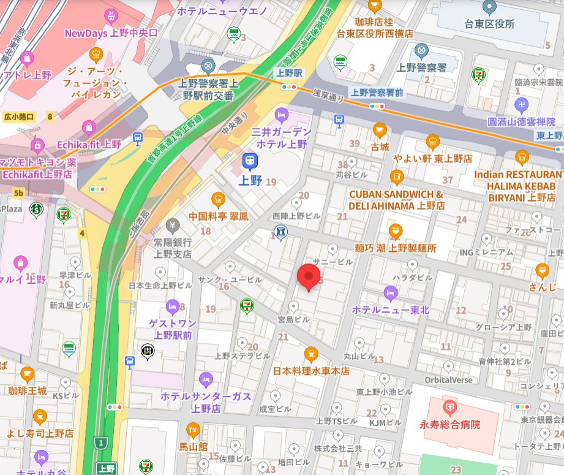

▣ 電車でお越しの方
JR上野駅、地下鉄（日比谷線・銀座線）上野駅より徒歩5分
佐藤医院では、患者様のご都合に合わせた診療を提供できるよう、柔軟な診療時間を設けております。
以下をご確認のうえ、ご来院の際にご利用ください。
| 診療時間 | 月 | 火 | 水 | 木 | 金 | 土 | 日 |
|---|---|---|---|---|---|---|---|
| 9:00〜12:00 | ● | ● | ● | ／ | ● | ● | ／ |
| 13:00〜18:00 | ● | ● | ● | ／ | ● | ／ | ／ |
休 診 日：木曜・土曜午後・日曜
※祝祭日も診療を行っておりますが、休診日もございますので、事前にご確認ください。
〒123-4567 東京都台東区上野0-0-0
電話番号：00-0000-0000 ／ FAX：00-0000-0000
メール：info@sato-clinic-test.jp

佐藤医院JR上野駅、地下鉄（日比谷線・銀座線）上野駅より徒歩5分
無料駐車場 10台分
（当院専用）
エントランスはバリアフリー設計となっており、スロープもご用意しております。